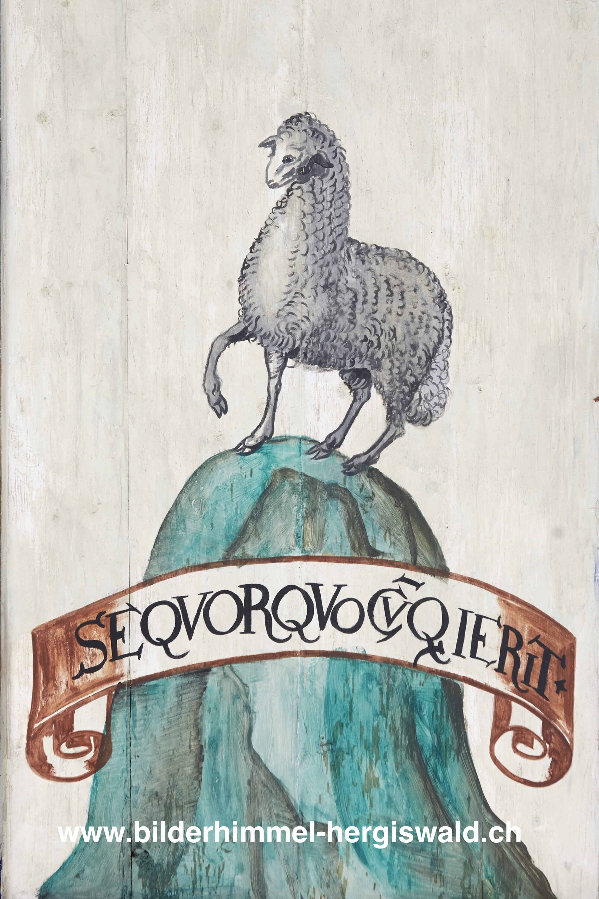

Das Schaf (Süd 43)

Ganz allein steht das Schaf auf dem steilen Hügel, auf dem kaum Platz ist: SEQUOR QUOCUMQUE IERIT, «Ich folge, wohin es auch geht», heisst es dazu. In der ursprünglichen Quelle bezog sich dies noch auf die Treue eines Schülers zu seinem Lehrer. Hier erhält das Motiv eine neue Bedeutung: Das Schaf steht einerseits für die Gläubigen, die in Maria eine mütterliche Begleiterin und Wegweiserin sehen. Andererseits lässt sich darin auch Maria selbst erkennen, in ihrer Bereitschaft, Gottes Weg ohne Vorbehalt mitzugehen. Das Emblem spricht somit von Vertrauen, Treue und entschlossener Nachfolge.